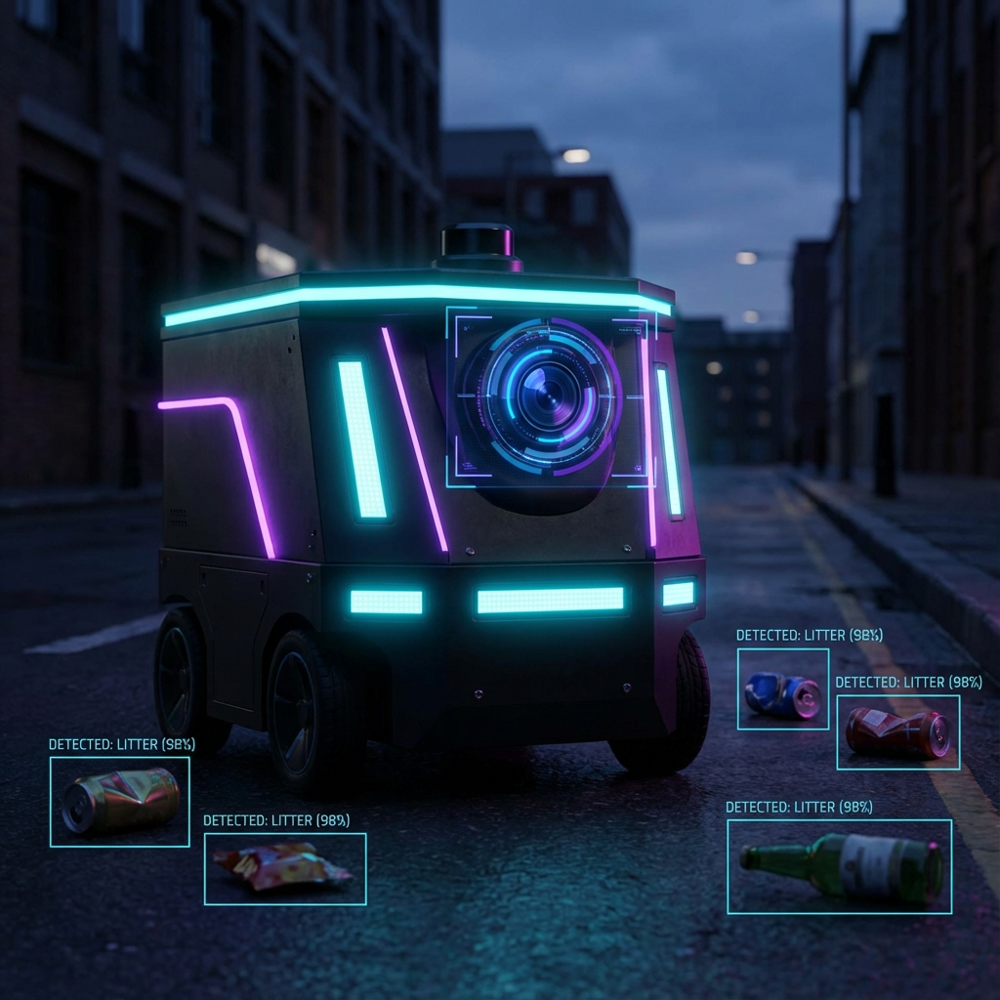

Hey, I'm Jay Joshi.
AI/ML Engineer · Cloud Architect · Full-Stack Builder
Who I Am
About Me
Bridging Data & Intelligence
I'm an AI/ML Engineer and full-stack builder holding a Graduate Certificate in Cloud Architecture (Seneca Polytechnic) and a Graduate Certificate in AI with Machine Learning (Humber College). I specialise in building production-grade AI systems — from real-time computer vision pipelines to LLM-powered applications — and turning complex data into intelligent, deployable products.
Specialisations
What I Build
Production CV Systems
Real-time object detection and tracking pipelines using YOLOv11, TensorRT, and DeepSORT — optimised for embedded GPUs and autonomous robotics.
LLM-Powered Applications
RAG pipelines, agentic Q&A with citations, prompt engineering workspaces, and AI-driven document intelligence — built with LangChain and Hugging Face.
Cloud-Native ML
End-to-end MLOps on AWS / Azure / GCP with Docker, Kubernetes, Terraform, and CI/CD — so models ship to production and stay there reliably.
Tech Stack
Technical Arsenal
Work History
My Experience
AI Analyst & Web Developer
Canadian Outlet
Toronto, Canada
- Deployed a production AI support chatbot (Claude API) for a live 500+ SKU electronics retail store — using prompt engineering and conversation orchestration to autonomously resolve product info, order tracking, and FAQ queries with zero human escalation.
- Engineered weekly Python scraping pipelines (BeautifulSoup, Requests, Selenium) extracting competitor pricing across 5+ e-commerce platforms, processing 500+ SKU price points per run and delivering structured pricing reports to management.
- Instrumented Google Analytics dashboards monitoring 3 weekly KPIs (traffic, conversion rate, bounce behaviour) — delivering structured snapshots to leadership that shaped promotional scheduling and product listing decisions.
- Sole technical resource — scoped, built, and deployed AI-driven tooling end-to-end alongside the CEO and operations team, translating business needs into production-grade systems with measurable commercial outcomes.
AI & Data Consultant (Freelance)
Upwork & Fiverr
Remote
- Executed AI and data science consulting engagements for retail and consumer goods clients — building Python and SQL analytical pipelines and presenting findings as structured dashboards for non-technical stakeholders.
- Built Power BI and Python dashboards covering category KPIs, market trends, and competitor benchmarks — giving clients a single-view analytics layer for faster, data-backed decisions.
- Integrated LLM APIs and prototyped RAG pipelines for intelligent query tools within client workflows — delivering applied AI across diverse industry contexts.
Machine Learning Engineer (Capstone)
Kevares Autonomous Services
Toronto, Canada
- Developed a real-time trash detection system for autonomous robots using YOLOv11n and OpenCV, achieving 82% mAP@0.5 and 0.85 precision via TensorRT optimisation.
- Applied transfer learning on TACO dataset and fine-tuned on custom street-level data, improving recall by 12% via model regularisation and multi-scale feature extraction.
- Optimised preprocessing and data augmentation pipelines, reducing training time by 25% using automated hyperparameter optimisation.
Software Developer Intern
Mindsclik
Bangalore, India
- Built and deployed an object detection system using YOLOv5 and OpenCV, achieving 98% accuracy on custom datasets with TensorRT and real-time GPU inference.
- Improved mAP by 15% via data augmentation and hyperparameter tuning; reduced inference time to <50ms per frame.
- Integrated model into a real-time application for automated detection workflows.
Software Engineer Intern
Pekaabo
Surat, India
- Shipped a new e-commerce checkout experience using TypeScript and ASP.NET Core, improving conversion flow completion by 27%.
- Built reusable infrastructure for image optimisation, product configuration, and personalised recommendations.
- Led backend redesign to support modular features, reducing deployment overhead.
Academic Background
My Education
Graduate Certificate in Cloud Architecture
Seneca Polytechnic
Toronto, Canada
Coursework: Cloud Infrastructure, Automation & Control Systems, Security Management, Cloud Integration, Data Storage, Ethics & Compliance.
Graduate Certificate in AI with Machine Learning
Humber College
Toronto, Canada
Coursework: Deep Learning, Advanced Deep Learning, NLP, Reinforcement Learning, AI Capstone, ML in Cloud Computing.
B.Sc. in Information Technology (Artificial Intelligence)
Parul University
Vadodara, India
Coursework: Data Structures, Machine Learning, Computer Vision, NLP, Data Mining, Neural Networks, Big Data Analytics.
Portfolio
Featured Projects

01Get In Touch
Let's Work Together
Open for full-time roles, freelance contracts, and interesting collaborations. Let's build something intelligent together.
jayjoshi3040@gmail.com